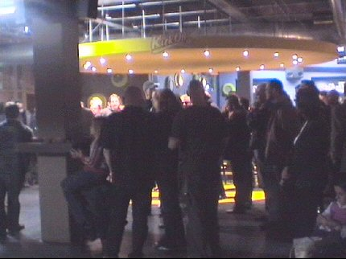
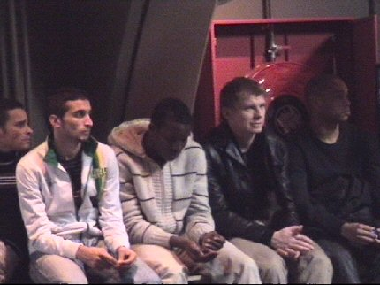
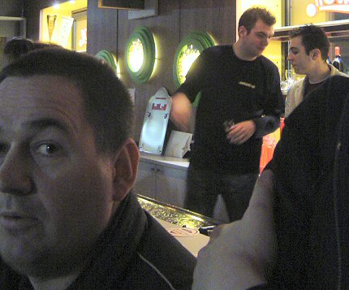
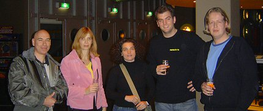

|
Forumavond 23 november 2005
|

Deze forumavond zonder duidelijk thema werd bezocht door circa 80 fans,
de gehele selectie alsmede een groot deel van
de staf. 
Huub Stevens trapte af met zijn visie over Roda JC en een evaluatie van het
verleden waarin Wiljan Vloet een behoorlijke trap na kreeg.

Hierna ging de nieuwe algemeen directeur verder met een zeer enthousiaste
Roda-show. Vervolgens was het de beurt aan het publiek om vragen te
stellen of opmerkingen te maken.
Er kwamen voornamelijk irrelevante items aan bod zoals poep op de stoeltjes,
Flexpointwissels, het gebrek aan evenementen in het PLS en de vermeend
slechte verstandhouding van supporters onderling op west.
Huub Narinx en Marcel Michiels reageerden helder en adequaat hierop.

Zoals altijd was het informele gedeelte van de avond "the best part
of the
show". Tegen de achtergrond van het videoscherm waarop Schalke, PSV
naar een 3-0 nederlaag speelde kwamen de veel waardevollere
individuele
gesprekken goed op gang.
En zo werd het toch nog 23.00 uur aleer de "letste koempels" de lamp
uit
konden maken.....
© Koempels Pleasure Dome
|